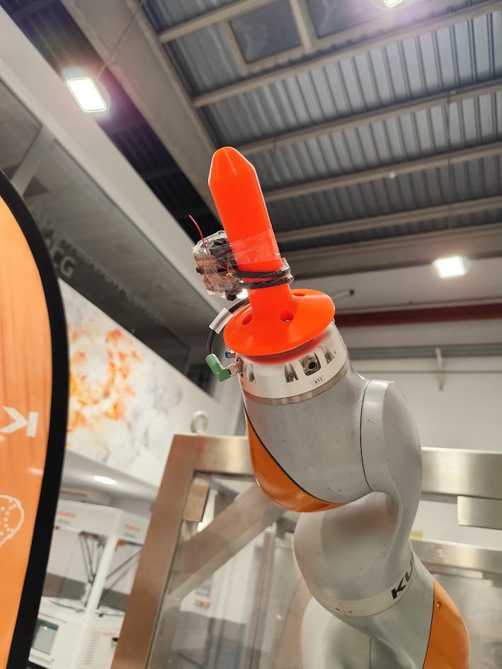
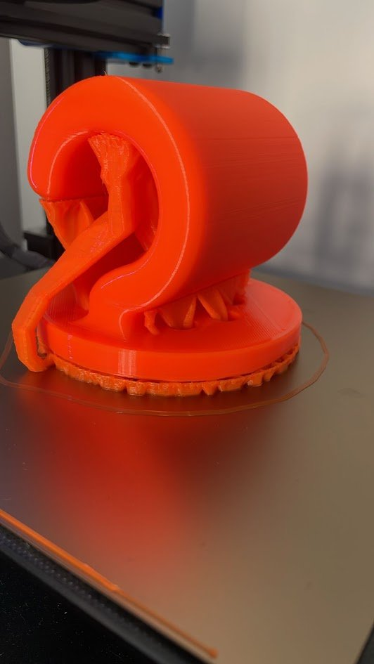
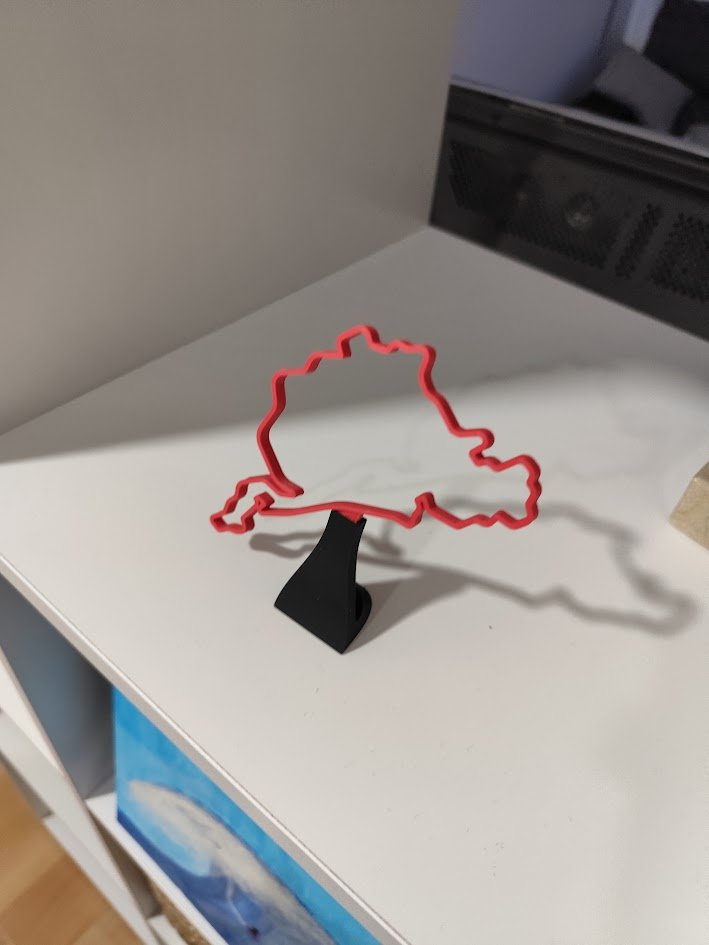

PROTOTIPATGE RÀPID · TALLER PROPI
Cup3D
Galeria de peces funcionals, utillatges industrials i projectes d'enginyeria inversa fabricats mitjançant impressió 3D FDM.
Tecnologia
Impressió 3D (FDM)
Material
PLA
Enfocament
Peces Funcionals & Utillatges
CAD
SolidWorks
Del modelat paramètric a la peça física en poques hores per validar ajustos, toleràncies i resistència mecànica.
Espai dedicat a prototips propis, utillatges a mida i peces d'enginyeria inversa orientades a resoldre necessitats pràctiques reals. Cada disseny optimitza l'orientació d'impressió, els roscats funcionals i els encaixos mecànics.
Prototip físic

Carcassa de mòbil a mida

Prototip robòtic en proves

Utillatge per a robot

Caragols mètrics funcionals

Circuit Nürburgring